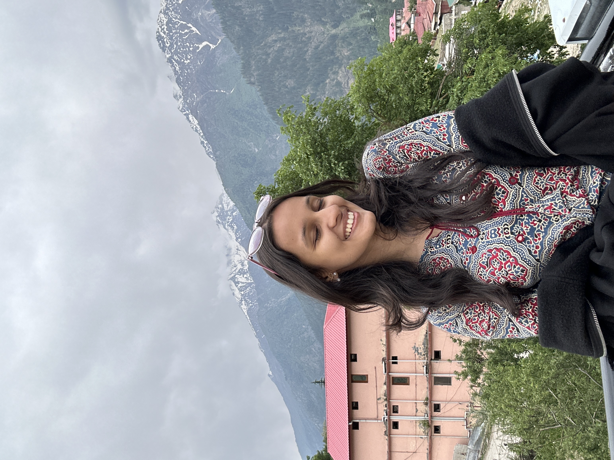

kashish
shah.
communication designer. researcher. observer. someone who finds the most interesting design problems in the oldest places.

the work
communication designer working at the intersection of branding, storytelling, research, typography, packaging, museums, and indian visual culture.
my process begins long before a single visual decision — in conversations, archives, and the rich texture of everyday life.
the approach
design, for me, is an act of translation — from culture to form, from problem to possibility, from story to system. restraint is its own form of boldness.
what i believe
design is a form of research made visible.
culture is the raw material of all meaningful design.
typography is never just type. it is a voice.
good design makes you feel before it makes you think.
the most human design is the kind that lasts.
currently exploring
the relationship between folk art and contemporary branding.
how typefaces carry cultural memory across generations.
what makes a museum experience genuinely transformative.
education & background
update with your degree, institution, and year.